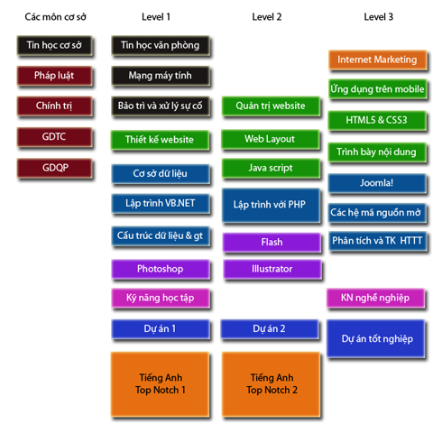

Công nghệ thông tin đã làm thay đổi sâu sắc cách chúng ta làm việc ngày nay. Giờ đây, máy tính là công cụ thiết yếu và không thể thiếu trong các hoạt động từ văn phòng tới chuyên môn sâu trong các doanh nghiệp. Sự thay đổi lớn nhất gần đây công nghệ thông tin mang lại cho doanh nghiệp là cách thức quảng bá hình ảnh, sản phẩm, dịch vụ đến khách hàng, đối tác; cách thức thu thập thông tin, giao dịch với khách hàng và đối tác trong và ngoài nước thông qua Internet và Web. Ngày nay, phần lớn doanh nghiệp thấy sự cần thiết phải xây dựng website riêng để quảng bá thông tin ra bên ngoài cũng như xây dựng các hệ thống web nội bộ giúp quản trị thông tin của doanh nghiệp. Chuyên ngành Thiết kế web (tên tương đương trong tiếng Anh là Web Engineering) trang bị kiến thức cho người học đáp ứng đòi hỏi này của cộng đồng doanh nghiệp, giúp đưa ra giải pháp web toàn diện và phù hợp nhất với doanh nghiệp. Chuyên ngành này không chỉ tập trung vào tính kỹ thuật khi xây dựng website mà còn trau chuốt về giao diện giúp xây dựng bộ mặt chuyên nghiệp cho website và ứng dụng web.
Kỳ 1-2: Kỹ thuật viên Công nghệ thông tin (Technical Certificate in IT)
Ở mức chứng nhận Kỹ thuật viên CNTT, người học được trang bị kiến thức giúp người học xử lý thành thạo các công việc liên quan đến máy tính dùng ở công sở. Với những kiến thức này, người học có thể đáp ứng các đòi hỏi công việc phổ biến trong doanh nghiệp vừa và nhỏ như: sử dụng phần mềm văn phòng, xây dựng hệ thống máy tính và mạng văn phòng nhỏ, hỗ trợ kỹ thuật, khắc phục sự cố, xây dựng website thông tin đơn giản quảng bá cho doanh nghiệp.
